Costa Blanca · Guardamar
Inmuebles en venta en Guardamar del Segura
Pisos nuevos y áticos cerca de las largas playas de arena, la pinada y el puerto deportivo. Estos son los inmuebles que vendemos hoy en Guardamar del Segura, con una breve guía de las zonas y lo que cuesta de verdad comprar.
- 11inmuebles en venta en Guardamar
- desde 222.000 €un piso nuevo
- unos 30 minal aeropuerto de Alicante-Elche
- unos 11 kmde playas de arena
En venta ahora
Inmuebles en venta en Guardamar del Segura
Pisos nuevos y áticos de 2 o 3 dormitorios, muchos cerca de la playa o del puerto, y un pareado en El Raso. Los precios son los de hoy; pregúntenos por la disponibilidad actual.
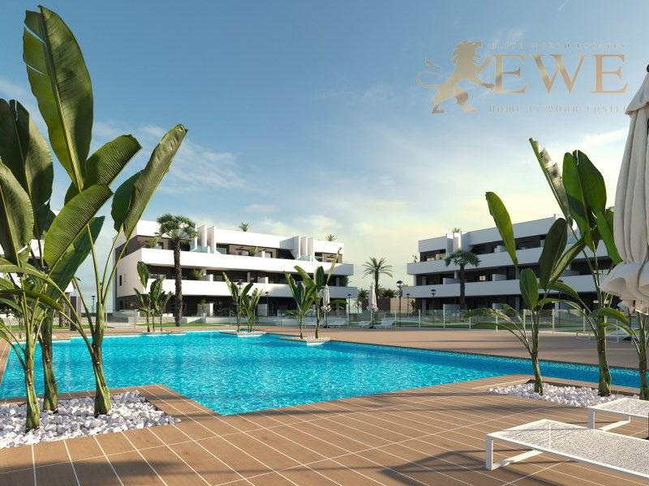
EWE3318Guardamar del Segura
Fully equipped, exclusive tourist flats in Guardamar del Segura
222.000 €
2 dormitorios · 2 baños · 64.1 m²Ref. EWE3318
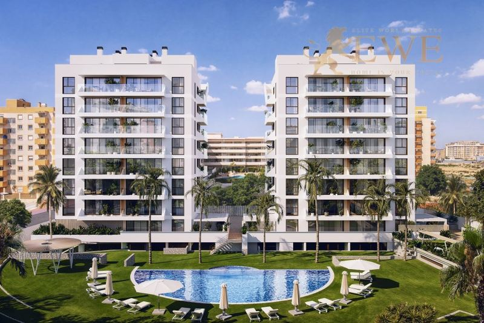
EWE3698Guardamar del Segura
New apartment close to the beach in Guardamar del Segura
253.000 €
2 dormitorios · 2 baños · 65 m²Ref. EWE3698
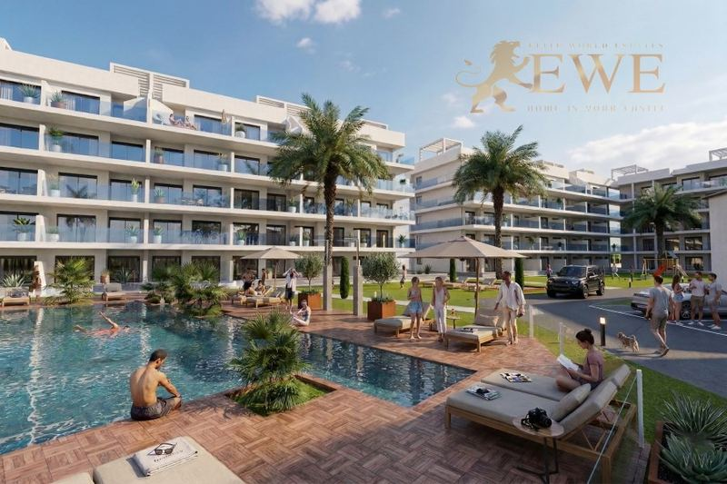
EWE3788Guardamar del Segura
Fully Furnished Apartments Next to La Mata Natural Park in Guardamar del Segura
295.000 €
2 dormitorios · 2 baños · 70 m²Ref. EWE3788
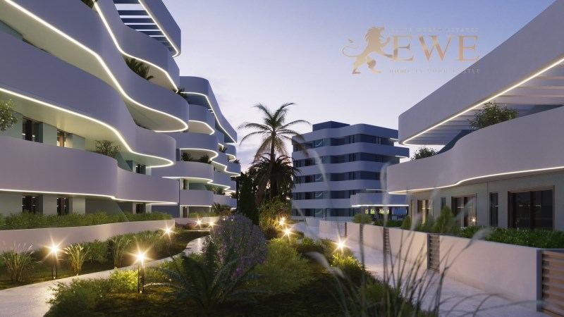
EWE3230Guardamar del Segura
Elegant apartment in picturesque El Raso
299.000 €
2 dormitorios · 2 baños · 80 m²Ref. EWE3230
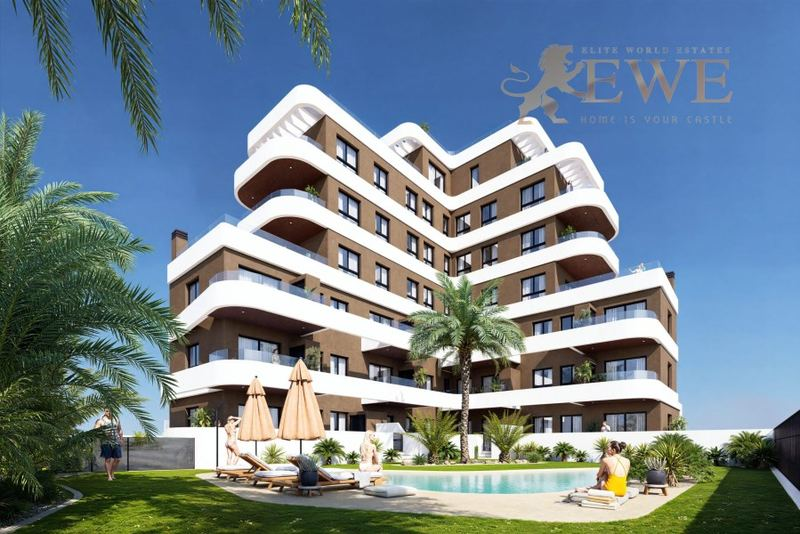
EWE3733Guardamar del Segura
New apartments just 1 km from the beach in Guardamar del Segura
305.000 €
2 dormitorios · 2 baños · 55 m²Ref. EWE3733
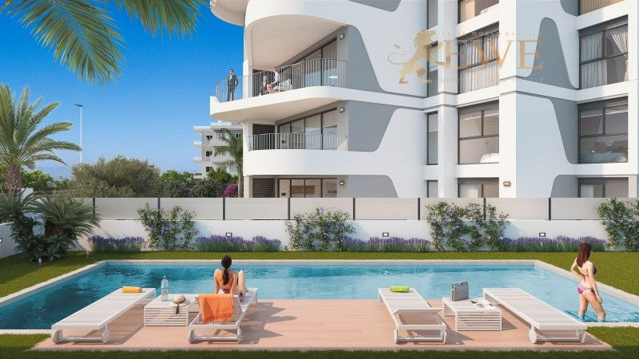
EWE3496Guardamar del Segura
New apartments near the port in Guardamar del Segura
315.000 €
3 dormitorios · 2 baños · 92 m²Ref. EWE3496
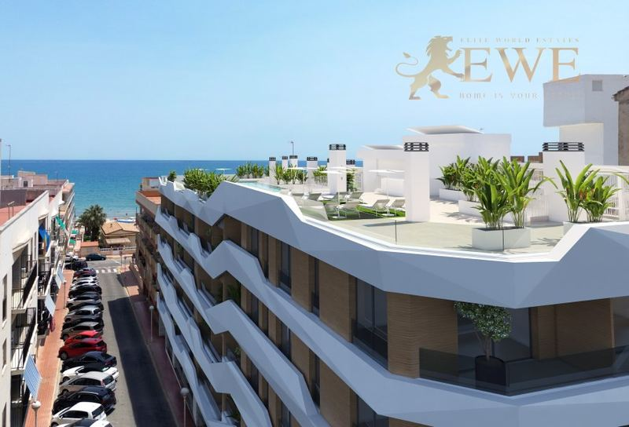
EWE3305Guardamar del Segura
Ideally located flat 100 m from the beach in Guardamar del Segura
341.000 €
2 dormitorios · 2 baños · 87 m²Ref. EWE3305
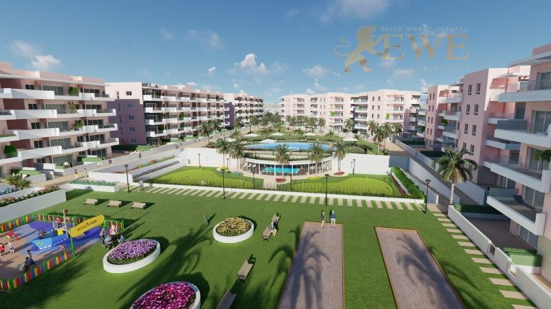
EWE3105Guardamar del Segura
Ready, new apartment with 145 m2 terrace in Guardamar del Segura
344.900 €
3 dormitorios · 2 baños · 75 m²Ref. EWE3105
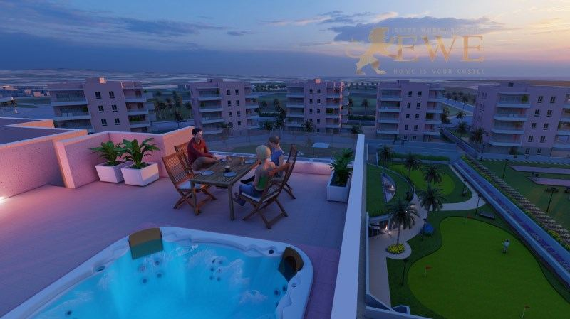
EWE3106Guardamar del Segura
Ready penthouse in Guardamar del Segura
344.900 €
3 dormitorios · 2 baños · 75 m²Ref. EWE3106
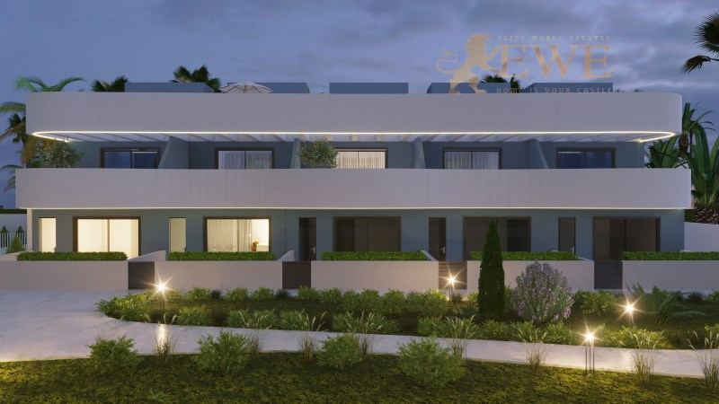
EWE3636Guardamar del Segura
Elegant semi-detached house with a large terrace in El Raso
459.000 €
3 dormitorios · 3 baños · 111 m²Ref. EWE3636
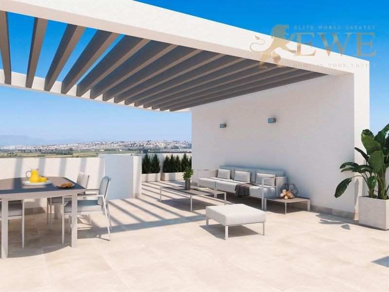
EWE3497Guardamar del Segura
Spacious penthouse close to the port and beach in Guardamar del Segura
550.000 €
3 dormitorios · 2 baños · 92 m²Ref. EWE3497
La ciudad
Vivir en Guardamar del Segura
Guardamar del Segura es una localidad costera de unos 17.000 habitantes en el sur de la Costa Blanca, donde el río Segura llega al mar, entre Santa Pola y Torrevieja. Es conocida por sus largas playas de arena, unos 11 km, con dunas y una gran pinada detrás que se plantó para sujetar la arena.
La localidad tiene un ambiente relajado y español, con un centro de tiendas y cafeterías, un puerto deportivo en la desembocadura del río y parques en la pinada para pasear y montar en bici. Al sur, muy cerca, está el parque natural de La Mata y su laguna.
Los precios son razonables y la localidad tiene vida todo el año. El aeropuerto de Alicante-Elche está a unos 30 minutos en coche, y Torrevieja a unos 15 minutos.
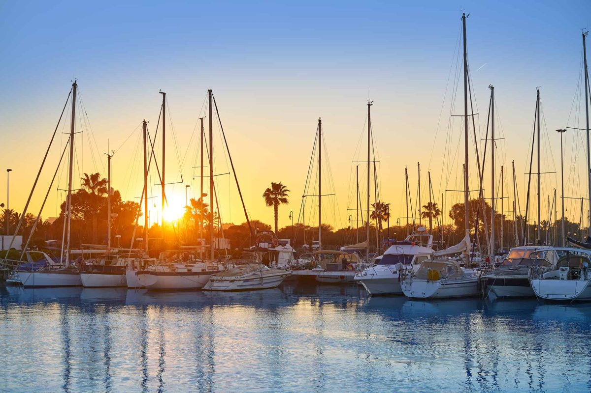
Dónde comprar
Las principales zonas de Guardamar del Segura
Centro
Tiendas, cafeterías y servicios a pie, a pocos minutos de la playa. Pisos para vivir todo el año.
Playa y pinada
Las playas, las dunas y los parques de la pinada. Pisos cerca de la arena.
Junto al puerto
El puerto deportivo en la desembocadura del Segura, con restaurantes. Pisos nuevos y áticos.
El Raso
Una zona residencial más tranquila al sur de la localidad, cerca del parque natural de La Mata. Pisos y casas.
Presupuesto
Cuánto cuesta comprar en Guardamar del Segura
Al precio se suman impuestos y gastos. Para una vivienda nueva de 315.000 €, por ejemplo, son 31.500 € de IVA y 4.410 € de AJD, más notaría, registro y abogado. En la segunda mano los impuestos son otros, así que pídanos siempre la cifra exacta de la vivienda que le guste.
| Obra nueva | 10 % IVA + 1,4 % AJD |
|---|---|
| Segunda mano | 9 % ITP, 11 % por encima de 1 millón de € |
| Notaría, registro, abogado | aprox. 1,5–2,5 % del precio |
| Cada año | IBI y gastos de comunidad, según la vivienda |
Preguntas
Comprar vivienda en Guardamar del Segura: preguntas y respuestas
¿Cuánto cuesta un piso en Guardamar del Segura?
Nuestros pisos en Guardamar empiezan hoy en 222.000 €, y la mayoría de 2 o 3 dormitorios cuestan entre 250.000 € y 345.000 €. Los áticos junto al puerto cuestan hasta unos 550.000 €.
¿Son de arena las playas de Guardamar?
Sí. Guardamar tiene unos 11 km de playas de arena fina con dunas y pinada detrás, de las más naturales de la Costa Blanca.
¿A qué distancia está Guardamar del aeropuerto?
El aeropuerto de Alicante-Elche está a unos 30 minutos en coche, y el de la Región de Murcia a unos 50 minutos.
¿Qué gastos hay además del precio?
En la Comunitat Valenciana se paga un 10 % de IVA y un 1,4 % de AJD en obra nueva, y un 9 % de ITP (11 % por encima de 1 millón de €) en segunda mano. Notaría, registro y abogado suman alrededor de un 1,5–2,5 %.
¿Pueden comprar vivienda los extranjeros en Guardamar del Segura?
Sí. Cualquier persona puede comprar una vivienda en España. Necesita un NIE y normalmente una cuenta bancaria española, y le ayudamos con las dos cosas. Consulte nuestra guía del NIE.


¿Busca casa en Guardamar del Segura?
Cuéntenos su presupuesto y lo que necesita. Respondemos en un día laborable, en español, inglés, alemán o polaco.